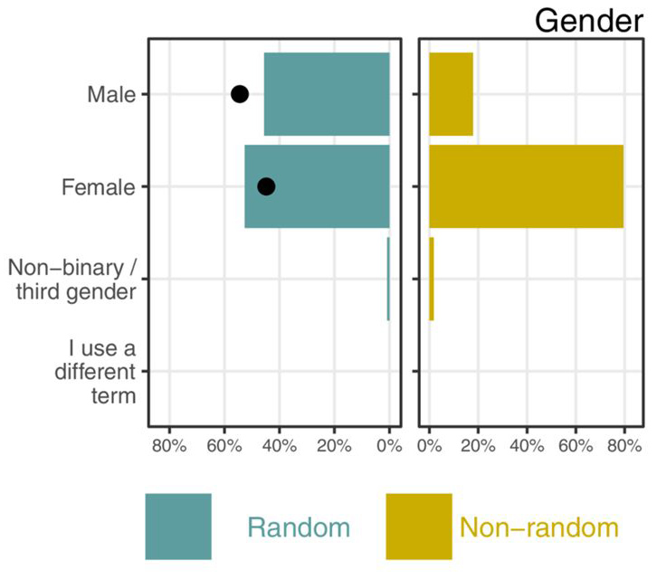

Some tips on running surveys
Queensland University of Technology
Photo by Jannes Glas on Unsplash
Benefits of surveys
- Quickly uncover new insights
- Hear from key groups
- Compare trends over time with repeat surveys
- Compare changes after a policy/practice change
Popular
Mistake #1 → Too long
- Ideally 5 mins, no more than 15 mins
- Can be longer if you’re paying people
- My shortest survey was three questions (DOI: 10.1371/journal.pone.0214047)

Mistake #2 → Leading questions
Mistake #2 → Leading questions
How tired did you feel after the new exercise regime?
How much better did you feel after the new exercise regime?
Use neutral wording – get colleagues and friends to check
Mistake #2 → Leading questions
How tired did you feel after the new exercise regime?
How much better did you feel after the new exercise regime?
Use neutral wording – get colleagues and friends to check
- How did you feel after the new exercise regime?
- Extremely tired
- Tired …
- Extremely energised
Mistake #2 → Leading questions
- Are you worried about the number of young people without jobs?
- Do you think there’s a lack of discipline in our schools?
- Would you be in favour of reintroducing national service?
Mistake #2 → Leading questions
- Are you worried about the number of young people without jobs?
- Do you think there’s a lack of discipline in our schools?
- Would you be in favour of reintroducing national service?
- Are you worried about the danger of war?
- Do you think it’s wrong to force people to take up arms against their will?
- Would you oppose the reintroduction of national service?
Surprise is good
- The most exciting phrase to hear in science, the one that heralds new discoveries, is not “Eureka” but “That’s funny”, Isaac Asimov

Mistake #3 → No pilot study
Find typos and questions that are hard to read
Find missing skip logic
Mistake #4 → Repeat questions
- How are you feeling today on a scale of 1 (worst ever) to 10 (best ever)
Later in the questionnaire
- Tell us about your mood today, from 10 (best ever) to 1 (worst ever)
Mistake #4 → Repeat questions
- How are you feeling today on a scale of 1 (worst ever) to 10 (best ever)
Later in the questionnaire
- Tell us about your mood today, from 10 (best ever) to 1 (worst ever)
Some exceptions:
- Discrete choice experiments
Cochrane review
Selected results from Cochrane review (Postal)
Odds of response increased for:
Monetary incentives, OR 1.86, 95% CI: 1.73 to 1.99
Telephone reminder, OR 1.96, 95% CI 1.03 to 3.74
Shorter questionnaires, OR 1.58, 95% CI 1.40 to 1.78
Selected results from Cochrane review (Postal)
Odds of response increased for:
Monetary incentives, OR 1.86, 95% CI: 1.73 to 1.99
Telephone reminder, OR 1.96, 95% CI 1.03 to 3.74
Shorter questionnaires, OR 1.58, 95% CI 1.40 to 1.78
Questionnaires from a university, OR 1.32, 95% CI 1.13 to 1.54
Assuring confidentiality, OR 1.33, 95% CI 1.24 to 1.42
Clinical questions last, OR 2.05, 95% CI 1.00 to 4.24
Selected results from Cochrane review (Electronic)
Monetary incentives, OR 1.88, 95% CI 1.31 to 2.71
Shorter questionnaires, OR 1.51, 95% CI 1.06 to 2.16
Stressing societal benefits, OR 1.38, 95% CI 1.07 to 1.78
Selected results from Cochrane review (Electronic)
Monetary incentives, OR 1.88, 95% CI 1.31 to 2.71
Shorter questionnaires, OR 1.51, 95% CI 1.06 to 2.16
Stressing societal benefits, OR 1.38, 95% CI 1.07 to 1.78
University sponsorship, OR 0.84, 95% CI 0.69 to 1.01
Postal questionnaire compared with electronic, OR 2.33, 95% CI 2.25 to 2.42
Non-random samples
Snowball sample (“tell your friends”, provide link at the end of the questionnaire)
Convenience sample
Spread on social media
Random sample

Random samples
More likely to represent the population
More believable
Requires a sampling frame, e.g., all registered trainers
Potential for higher quality data in a smaller sample
Differences in random and non-random samples
- Study of career disruption
- Random sample of Australian authors on PubMed
- Non-random convenience sample shared on Twitter and LinkedIn and end of survey

Non-response bias
Strongly motivated respondents means the sample is not representative of the population
Jeffery Archer is not a better writer than William Shakespeare
Census
Approach everyone
For example, every Human Research Ethics Committee in Australia
Not a sample
Confidence intervals do not make sense (no wider population)
Regular tracking
Imposter participants
“Potential participants were recruited via a publicly available social media advert on Facebook offering $50 AUD compensation.”
“We identified imposters at an early stage via inconsistencies in their self-reported geographical location and that captured by the survey as well as recognition of suspicious actions before, during and after focus group discussions and interviews.”
Exclusions
Online survey tools can give a rating of whether people completed too fast (beware of bots)
Can also exclude people based on IP address
Report all exclusions
Check questions
- To confirm that you’re reading the questions, please click “Agree”
- Strongly agree
- Agree
- Neither agree of disagree
- Disagree
- Strongly disagree
Equivalent to “I am not a robot”
Randomise
Randomising reduces bias
Randomise order of questions, can find priming effects
Randomise
Randomising reduces bias
Randomise order of questions, can find priming effects
Randomly order responses, e.g.:
- Strongly agree to Strongly disagree
- Strongly disagree to Strongly agree
Reporting checklist
A Consensus-Based Checklist for Reporting of Survey Studies (CROSS), DOI:10.1007/s11606-021-06737-1
State the word “survey” along with a commonly used term in title or abstract to introduce the study’s design
Describe the questionnaire (e.g., number of sections, number of questions, number and names of instruments used)
Describe the study population (i.e., background, locations, eligibility criteria for participant inclusion in survey, exclusion criteria)
Allow comments / free text
Respondents can give great quotes:
“No country bureaucratised its way to excellence” - comment on our survey on ethics
“not needed for 99.9% of applications” - comment on whether ethics committees need statisticians
Analysis
Can be largely descriptive, tables and bar plots
Always check missing data - were there questions that were hard to answer?
Describe the characteristics of the sample
Questions and comments